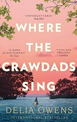
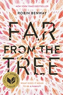
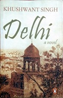
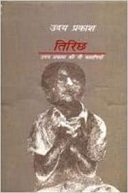
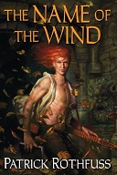
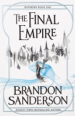
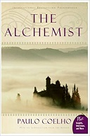
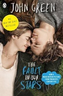
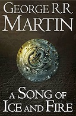

Vikram Singh – Bibliophilia
I like to read books specially fiction and fantasy. I have listed down few of the good books that I liked and were at the top of my head while writing this page.
|  | Where the Crawdads Sing (2018)Novel by
|
|  | Far from the Tree (2017)Novel by
|
|  | Delhi: A Novel (1990)Novel by
|
|  | Tirichh (2014)Novel by
|
|  | The Name of the Wind (2007)Novel by
|
|  | Mistborn: The Final Empire (2006)Novel by
|
|  | The Alchemist (1988)Novel by
|
|  | The Fault in Our Stars (2012)Novel by
|
|  | A Song of Ice and FireBooks
|
Other Good Books
Books (I will add the covers and summary later)
Anything You Want (2011) by
Derek Sivers .The Order of Time (2017) by
Carlo Rovelli .Men Explain Things to Me (2014) by
Rebecca Solnit .The Guest (1957) by
Albert Camus .The Murder of Roger Ackroyd (1926) by
Agatha Christie .The Wind-Up Bird Chronicle (1994) by
Haruki Murakami andJay Rubin .Norwegian Wood (2000) by
Haruki Murakami andJay Rubin .